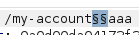
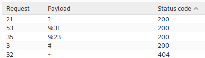

Exploiting cache server normalization for web cache deception
- Provided with blog website, credentials "wiener:peter", told to find API key of user carlos
- Logged in with provided credentials
- Intercepted refresh request in burpsuite and forwarded to repeater
- Set positions after /my-account and appended aribitrary string after:

- Pasted provided list of delimiters as payload and started attack
- Discovered 4 valid delimiters:

- Checked HTTP history tab for likely static folders and discovered /resources folder
- Used /my-account%23%2f%2e%2e%2fresources to navigate from my-account while retaining X-Cache use
- Navigated to https://0a03005803af6c40803103e700eb00f0.web-security-academy.net/my-account%23%2f%2e%2e%2fresources
- Submitted carlos' API key and completed lab successfully: